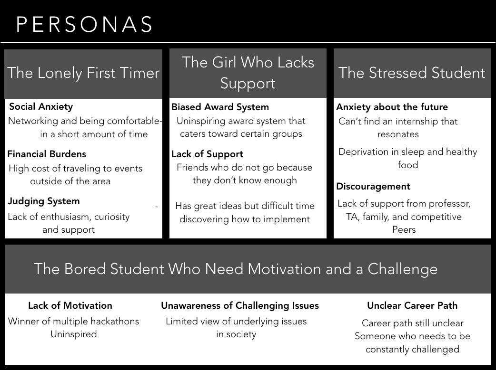

Hackathon Collaboration Tool
My journey into hackathons and how that inspired this project

Hackathons used to intimidate me. I didn't feel like I knew enough, coding for 24-48 hours seemed draining, and I didn't understand what they were really about. I participated in my first hackathon at Capital One's Software Summit and had an incredibly positive experience. I learned more in a smaller amount of time than I ever did in school, made friends with people who I barely knew, and my team placed 2nd!
I quickly became addicted and took initiative to get involved in my summer internship's hackathon afterwards. I worked with a group of interns and full timers on a community service tool for their senior leadership team. It felt fulfilling to know that our work added value to their employees and that we were genuinely appreciated.
Once I went back to school, I went to 13 university hackathons across the country and got to work for Major League Hacking for my spring semester! Being on the other side as an attendee, I could empathize and understand the fears and pain points of other attendees and used my unique perspective to improve their experience. This tool is my solution to the common problems that I observed and was given in feedback from attendees.
Understanding the Problem
I was able to gather feedback from many students from across their northeast and midwest on their perspective and how to improve. The common pain points that I found were:
- Awareness of underlying problems in society, seeking meaningful work
- Financial burdens
- Stress managing coursework and applying to real life
- Unclear structure of how a hackathon works
- Social anxiety
